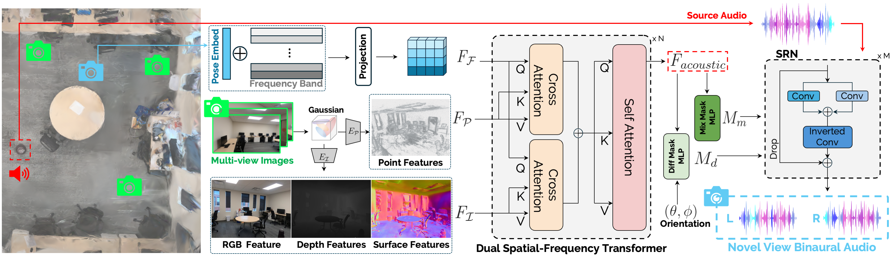

Overview

AV-Surf Overview.
AV-Surf first train 2DGS with given multi-view images to obtain various type of real-world environment information. Then we utilize two type of encoders, \(\mathit{E}_{\mathcal{P}}\) and \(\mathit{E}_{\mathcal{I}}\), to extract geometry and spatial features, \(\mathit{F}_\mathcal{P}\) and \(\mathit{F}_\mathcal{I}\). We inject spatial cues to position added frequency embeddings \(\mathit{F}_\mathcal{F}\) with iterative transformer layers to learn real world acoustics. After \(\mathit{F}_{acoustic}\) is obtained, AV-Surf follows the method from the previous study to get mixture \(\mathit{M}_m\) and difference \(\mathit{M}_d\) acoustic masks. Finally, our ConvNeXt-based decoder takes sound source and both mixture and difference acoustic masks to generate novel view binaural audio.